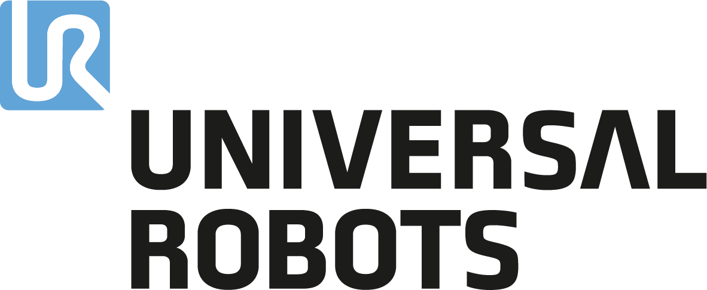

A Universal Robots é uma fabricante dinamarquesa de braços robóticos colaborativos (cobots) que se destaca por criar robôs seguros e fáceis de usar. A sede global da Universal Robots fica em Odense, na Dinamarca. Fundada em 2005, a empresa, que comercializa robôs colaborativos (cobots), lançou o seu primeiro produto viável em 2008 e já vendeu mais de 75.000 cobots em todo o mundo. A empresa tem escritórios em outros locais, incluindo São Paulo (Brasil) e Michigan (EUA).